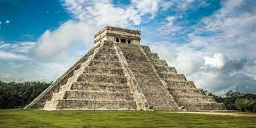
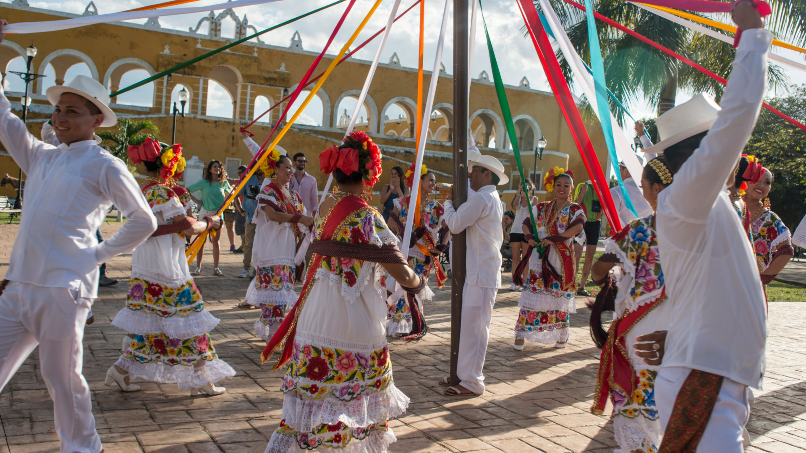

 Historia
La historia de Yucatán es fascinante y se remonta a
miles de años atrás. La región fue el hogar de la avanzada civilización
maya, cuyas impresionantes ciudades-estado florecieron mucho antes de
la llegada de los conquistadores españoles. La conquista de Yucatán por
parte de los españoles comenzó en 1527 y se prolongó durante décadas
debido a la resistencia maya. La región se convirtió en una importante
productora de henequén durante el siglo XIX, lo que trajo consigo
riqueza y la construcción de opulentas haciendas.
Yucatán se encuentra en el sureste de México, en la península de Yucatán. Es conocido por su topografía plana, su suelo calizo y su falta de ríos superficiales, lo que resulta en un sistema único de ríos subterráneos y cenotes. Estos cenotes no solo son hermosos, sino que también son fundamentales para el suministro de agua en la región.
La cultura de Yucatán es un rico tapiz de influencias mayas y españolas. Las tradiciones mayas siguen siendo una parte vital de la vida cotidiana, y la lengua maya aún se habla ampliamente. La región es famosa por su música, la Trova Yucateca, y sus danzas tradicionales, como la Jarana.
Gastronomia
La gastronomía yucateca es única en México y se caracteriza por el uso de ingredientes como el achiote y la naranja agria. Platos como la cochinita pibil, los panuchos y la sopa de lima son solo algunos ejemplos de la rica cocina de la región.
Yucatán es hogar de algunas de las zonas
arqueológicas más importantes del mundo maya, incluyendo Chichén Itzá y
Uxmal. Mérida, la capital, es conocida por su hermosa arquitectura
colonial y su vibrante vida cultural.
 Eventos y Festividades
Las festividades en Yucatán son numerosas y variadas, desde las celebraciones religiosas hasta las ferias locales. El Carnaval de Mérida es uno de los más grandes y coloridos de México.
La economía de Yucatán ha estado tradicionalmente dominada por la agricultura, especialmente el cultivo del henequén. Sin embargo, en las últimas décadas, el turismo ha crecido enormemente y se ha convertido en una fuente vital de ingresos para la región.